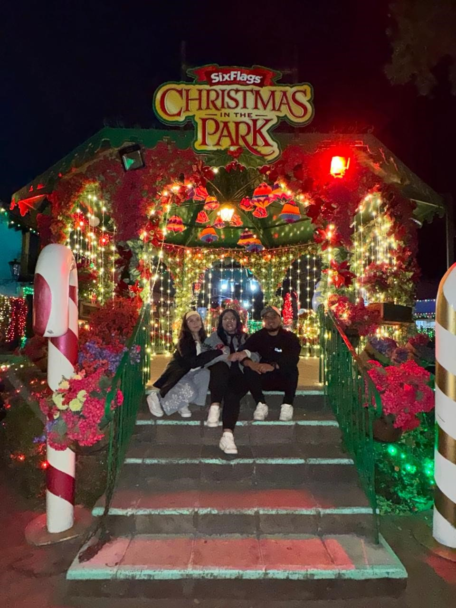

Encuesta UPVM: La Cruda Realidad 🎓
1. ¿Qué frase describe mejor a tus profesores esta semana?
-- Selecciona una opción --
Explican súper bien y dan paz mental
"Esto ya lo debieron ver en el kínder"
Creen que su materia es la única que cursamos
Llegan 20 minutos tarde pero exigen puntualidad
2. Sinceridad ante todo: ¿Qué tipo de compañero de equipo eres?
-- Selecciona una opción --
El acarreador del equipo (estrés al 100%)
El que pregunta "¿qué hay que hacer?" 10 minutos antes
El diseñador de diapositivas y animaciones
Pone para los refrescos pero no aparece en el grupo de WhatsApp
3. ¿Cuál es el mayor misterio sin resolver de la UPVM?
-- Selecciona una opción --
El Wi-Fi que solo agarra si te paras en un pie bajo la luna llena
Los contactos donde mágicamente ningún cargador embona bien
Saber a qué hora habrá papel en los baños
Por qué las bancas están congeladas en la mañana y ardiendo a mediodía
4. ¿Cómo te preparas mentalmente para un examen parcial?
-- Selecciona una opción --
Estudio con días de anticipación (modo estudiante modelo)
Un café concentrado y tutoriales de YouTube en velocidad 2x
Aporto mi fe en el "Dios proveerá" y respondo al azar
Busco la tabla de equivalencias para ver si aún paso con 7.0
5. ¿Cuál es la verdadera fuente de energía del estudiante de la UPVM?
-- Selecciona una opción --
El deseo genuino de graduarme y triunfar en la vida
Los tacos de afuera y una maruchan
Bebidas con cafeína pura fluyendo por mis venas
Las risas con los amigos entre clase y clase
Enviar Respuestas y Reclamar Regalo 🎁